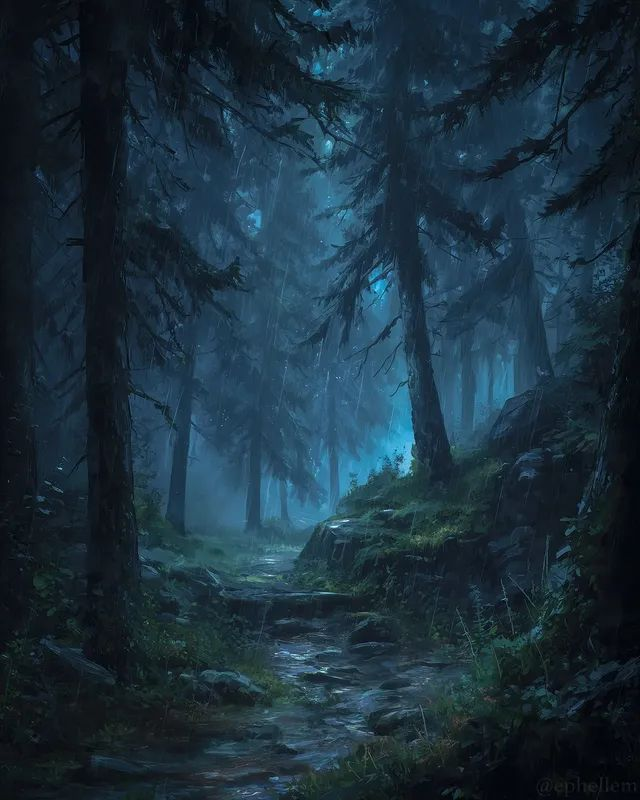

You wake beneath dead reeds, free of chains and far from any road. Wind and marsh-mist hide the horizon.
Theme
Act II

You wake beneath dead reeds, free of chains and far from any road. Wind and marsh-mist hide the horizon.